AWS Community Day · Santiago de Compostela · 17.10.2026
Kiro CLI en acción: automatizando el desarrollo de software con Loop Engineering
Cómo pasar de “pedirle cosas al agente una a una” a diseñar ciclos y flujos que se ejecutan, se verifican y se corrigen solos.
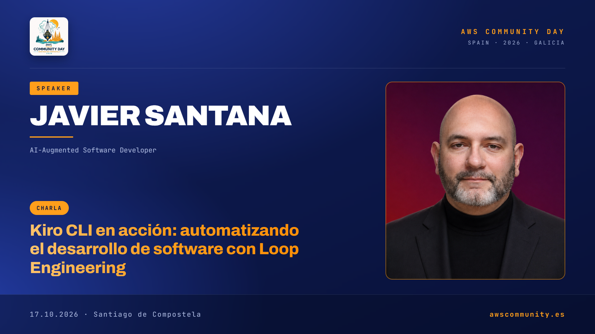
Punto de partida
Kiro ya no es solo un IDE: es el mismo harness en cuatro superficies
Kiro nació hace año y medio con dos formas de trabajar: vibe coding y specs. Desde entonces ha añadido decenas de capacidades y nuevas formas de acceder a él.
Kiro IDE
Controlar el proceso desde la máquina del desarrollador.
Kiro CLI
Lo mismo desde terminal, y además automatizar CI/CD. Protagonista de esta charla.
Kiro Web
Trabajar en la nube.
Kiro Mobile
Supervisar y tomar decisiones cómodamente desde el móvil.
El mapa
Cada problema de los agentes ha generado su propia disciplina
Todo empezó con el prompt engineering. Cada vez que hemos tenido que lograr que un agente se comporte como queremos, ha aparecido un nombre nuevo. Las dos últimas filas son el hilo de esta charla.
Qué le damos al modelo
Prompt
Optimizar las instrucciones de una llamada al modelo.
Context
Optimizar dinámicamente la ventana de contexto a lo largo de varias interacciones.
Retrieval
Optimizar cómo recuperamos los datos que dan conocimiento al modelo.
Memory
Gestionar la información compartida entre ventanas de contexto.
Tool
Acceso a herramientas y sistemas externos.
Skill
Capacidades especializadas y reutilizables.
Cómo controlamos lo que hace
Loop
Ciclos de ejecución, evaluación y corrección hasta un objetivo verificable o una condición de parada.
Graph
Tareas y agentes organizados en un grafo: dependencias, decisiones, ramas paralelas, flujo de control.
Guardrail
Controles, permisos y límites de ejecución.
Harness
El sistema completo que rodea al modelo para que ejecute tareas, guarde información, se coordine y verifique resultados.
Dos conceptos hermanos
Loop repite hasta acertar; Graph ordena quién hace qué y cuándo
Loop Engineering
Se centra en iterar hasta lograr un objetivo verificable o llegar a una condición de parada.
Ejemplo: revisar y corregir hasta que las pruebas pasen.
Graph Engineering
Se centra en orquestar el flujo: pasos secuenciales o paralelos cuando sea posible, respetando las dependencias.
Ejemplo: especificar, construir y desplegar, con tres tareas de código en paralelo.
Se combinan: un grafo cuyos nodos contienen loops. Eso es exactamente lo que hacen los workflows de Kiro.
¿Para qué?
¿De qué nos sirven Graphs y Loops en desarrollo con agentes?
Graphs: no pedir las cosas una a una
Describes una serie de tareas encadenadas y el agente las recorre en orden, en paralelo cuando se puede, sin que tengas que lanzar cada paso a mano.
Loops: iterar hasta cumplir una condición
Los loops viven dentro de los workflows. Permiten ciclos de revisión y mejora que no terminan hasta que se cumple algo comprobable, por ejemplo que la ejecución de las pruebas sea exitosa.
Resultado: menos supervisión paso a paso, y las personas intervienen donde aportan más valor (aprobar, decidir, desbloquear).
Criterios de diseño
Un loop funcional no es repetir llamadas al LLM: es controlar la trayectoria hasta un resultado verificable
Debe permitir que el agente trabaje solo, compruebe si progresa, corrija errores y pare cuando toque, sin gastar recursos de más ni perder el objetivo.
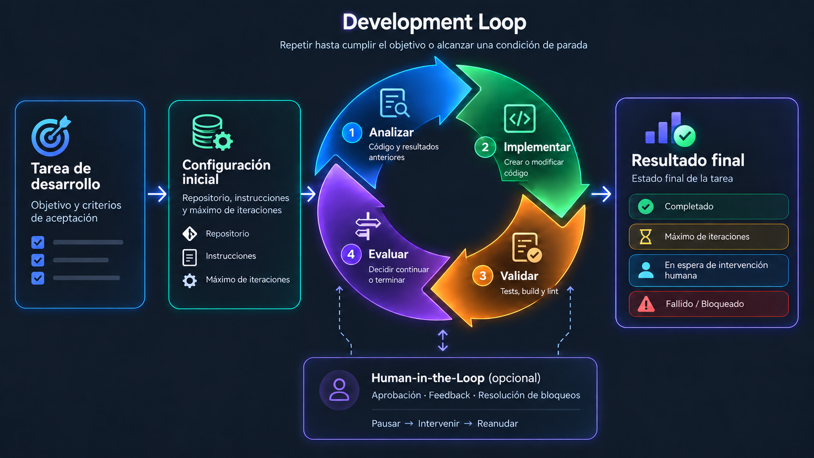
El ciclo analizar → implementar → validar → evaluar, con parada por éxito, tope de iteraciones, intervención humana o fallo.
Las 10 características fundamentales
Característica
Qué debe garantizar
1. Objetivo verificable
Criterios de aceptación claros; no depender de que el LLM diga “ya está”.
2. Observación del entorno
Estado real de la tarea mediante herramientas y evidencias externas.
3. Ejecución adaptativa
Elegir la siguiente acción según objetivo, estado y resultados previos.
4. Verificación de resultados
Comprobar el efecto de cada acción, mejor con verificaciones deterministas.
5. Medición del progreso
Detectar si se avanza o si se repiten acciones sin mejora.
6. Recuperación de errores
Reintentar, cambiar de estrategia, revertir, pedir ayuda o abandonar.
7. Gestión del estado
Conservar objetivo, decisiones y trabajo verificado entre iteraciones.
8. Terminación controlada
Condiciones explícitas de fin: éxito, fallo, bloqueo, cancelación o recursos agotados.
9. Control de recursos y seguridad
Límite de iteraciones, tiempo, tokens, costes y acciones; aprobaciones cuando haga falta.
10. Observabilidad y trazabilidad
Registrar decisiones, herramientas, verificaciones, errores y estado para mejorar el loop.
Consistentes con patrones de agentes de Anthropic, los controles del OpenAI Agents SDK y propuestas recientes de Loop Engineering.
Hoja de ruta de la charla
En Kiro hay dos caminos para construir loops y tres ejemplos con demo, de menos a más
Programático
Un script (sh) llama a kiro-cli y es el script quien controla el flujo con while, if y códigos de salida.
Loop 1 y Loop 2
Declarativo: Kiro Workflows
Se describe el grafo en un fichero JSON/YAML y es el runtime de Kiro quien controla repeat, parallel y las condiciones de parada.
Loop 4 en la charla (Loop 3 está en el repositorio)
Loop 1 · Hello World. Un solo agente, una verificación determinista.
Loop 2 · Refinamiento de artículos. Tres agentes especializados con modelos distintos y tope de 5 iteraciones.
Loop 3 · El mismo loop, como workflowsolo en el repositorio Receta refine-article: el runtime repite y para cuando un fichero de estado dice approved: true. No se muestra en la charla por tiempo; la demo de Workflows es Loop 4.
Loop 4 · Software completo. Tres workflows encadenados: especificar, construir y desplegar.
Loop 1 · Programático
Hello World: kiro-cli dentro de un script, verificado por el propio script
Demo 1 (23 s). Se ejecuta ./simple-loop.sh: el agente lee y escribe target.txt y el script imprime PASS.
Se usa kiro-cli con las primitivas del sistema operativo. El agente hace el trabajo; el script comprueba el resultado.
--no-interactive: ejecuta Kiro CLI sin preguntas ni interfaz interactiva, imprescindible dentro de un script.
--trust-tools=fs_read,fs_write: autoriza solo esas herramientas durante la ejecución (principio de mínimo privilegio).
Cuenta las líneas de target.txt antes y después; si hay una más y contiene Hello, world!, imprime PASS; si no, ERROR.
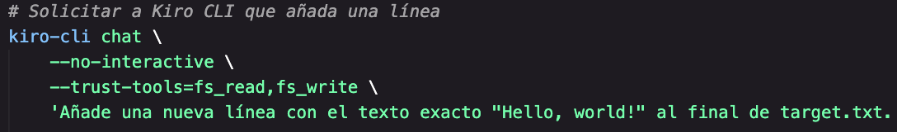
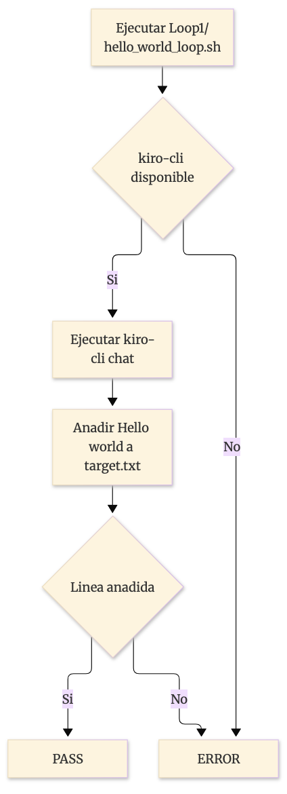
Lección: el loop tiene un criterio de éxito comprobable por código, no por la opinión del LLM.
Loop 2 · Programático
Refinamiento de artículos: un agente crea, otro revisa y otro mejora, hasta 5 veces
Tres agentes de Kiro CLI con una responsabilidad cada uno y el modelo adecuado para cada tarea.
Agente
Modelo
Papel
loop2-article-creator
Qwen 3
Escribe la primera versión (menos de 100 palabras).
loop2-article-reviewer
Haiku 4.5
Evalúa con métricas simples y responde APPROVED o REJECTED.
loop2-article-improver
Haiku 4.5
Recibe tema, artículo actual y revisión anterior, y devuelve una versión mejor.
Cada agente se invoca con --no-interactive --agent <nombre>; su salida se captura en variables del shell, sin ficheros de trabajo.
El while del script lleva el contador y decide: APPROVED termina con PASS; tras 5 iteraciones sin aprobar termina con error.
Separar creador y revisor evita que el agente se califique a sí mismo.
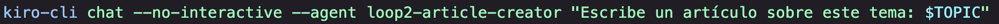
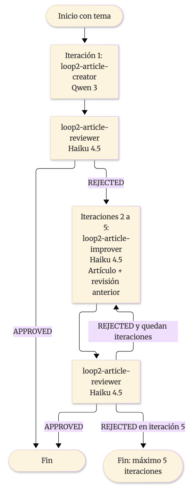
Ver las definiciones de los agentes
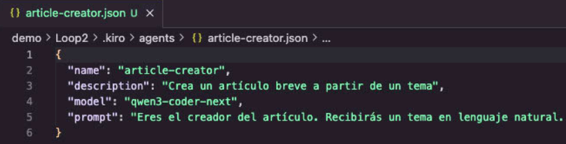
creator
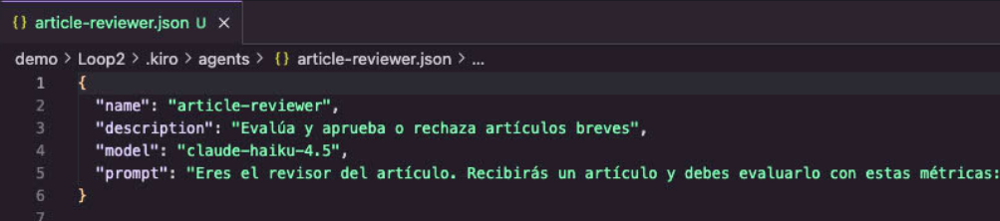
reviewer
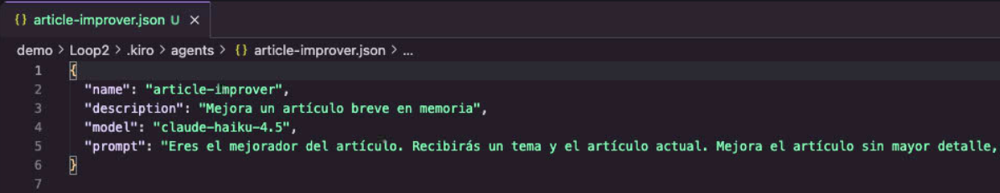
improver
Demo · Loop 2
El loop en marcha: el revisor rechaza, el improver corrige y el tope de 5 iteraciones protege el coste
Se ejecuta ./refine_article_loop.sh "¿Qué es Loop Engineering". Cada iteración imprime su número, el artículo y la revisión del reviewer.
Demo 2 (1 min). Ejecución del script de refinamiento de artículos.
Límite del enfoque programático: toda la lógica de control (contador, parada, errores) vive en el script y hay que programarla a mano. Los workflows la ofrecen declarativa.
Camino declarativo
Un Workflow es un grafo de pasos de agente que personas y agentes pueden leer y crear
Qué contiene
Nodos que invocan agentes (cada uno con contexto independiente), secuencias, loops y ramas paralelas.
Contexto fresco por paso
Cada paso corre en su propia sesión. Así un revisor evalúa el trabajo sin heredar el razonamiento de quien lo escribió.
Cómo se crean
Los puede generar Kiro para atender una petición, o los puedes definir tú con lenguaje natural o a mano.
Dónde viven
Se llaman recetas (recipes) y son ficheros JSON o YAML en .kiro/workflows. Funcionan de forma similar en Kiro IDE, CLI y Web.
Lo que el runtime garantiza
repeat con maxIterations y onMaxIterations: pause como freno de seguridad.
stopCondition con fileCheck: el loop para cuando un campo de un JSON (por ejemplo approved) vale true.
parallel para ramas simultáneas y completion para pausar un paso a la espera de una persona.
Lo que no garantiza: las rutas de escritura y el reparto del trabajo siguen dependiendo de los prompts de los agentes.
Loop 4 · Visión general
Todo el SDLC como un grafo de tres workflows, cada uno con su propio loop
1
Specs Creation
software-spec
Loop de refinamiento: analista y revisor iteran hasta que la especificación está lista.
→
2
Code Generation
software-build
Loop de pruebas y corrección: construye por olas, con carriles en paralelo.
→
3
Code Deploy
software-deploy
Loop de verificación: instala, arranca y comprueba que la app responde.
Los tres comparten una carpeta física por proyecto en Loop4/<proyecto>/, que es el hilo que une un workflow con el siguiente.
El runtime controla la repetición (repeat) y la parada (fileCheck); cada agente solo hace una vuelta.
Las personas participan en los puntos de decisión: responden al analista y confirman el plan y la propuesta de despliegue.
Workflow 1 · software-spec
Especificación: un analista pregunta, un revisor juzga y solo se avanza con tu aprobación
El namer crea la carpeta del proyecto en Loop4/ a partir de la idea.
La receta define workflow, agente, nivel de esfuerzo y prompt inicial.
Un repeat con máximo de 10 rondas se detiene cuando approved es true.
El Analyst hace hasta 5 preguntas por ronda, busca en la web para cubrir huecos y reescribe spec.md.
El Reviewer valora solo el documento y emite un juicio: ¿está lista para implementarse?
La aprobación es doble: approved = revisor APPROVED && usuario aprueba, escrita por el agente independiente.
Cada ronda del analista es una sesión nueva: su memoria son spec.md, la conversación y la última revisión.
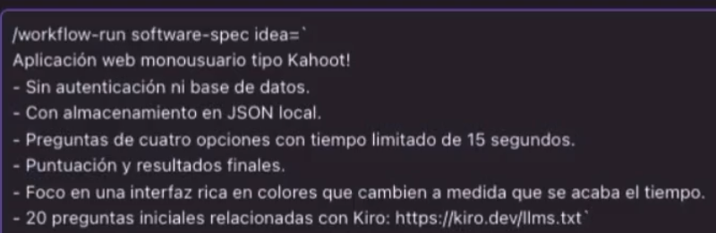
Lanzamiento: /workflow-run software-spec idea=…
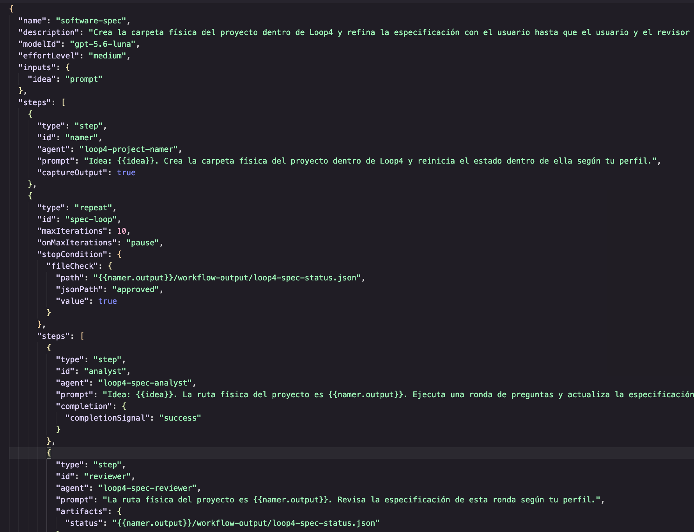
La receta: namer → repeat(analyst, reviewer) con fileCheck.
Workflow 2 · software-build
Construcción: un plan por olas, tres carriles de código en paralelo y pruebas antes de avanzar
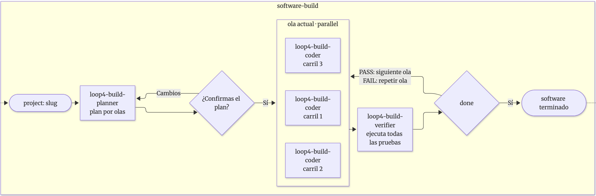
El planner convierte la spec en plan.md (para personas) y plan.json (para agentes) y pide tu confirmación; si pides cambios, rehace el plan.
En cada ola trabajan tres coders a la vez. El plan asigna cada fichero a un único grupo para que no haya conflictos; si un carril no tiene grupo, termina sin hacer nada.
El verifier ejecuta todas las pruebas: PASS avanza de ola, FAIL repite la ola y los carriles reciben la salida de las pruebas para corregir.
Freno de seguridad: máximo de 15 iteraciones con pausa al agotarlas.
El paralelismo no garantiza menos tiempo total; aquí sirve sobre todo para aislar el trabajo de cada carril.
Workflow 3 · software-deploy
Despliegue: se propone, tú confirmas, se arranca y se comprueba que responde
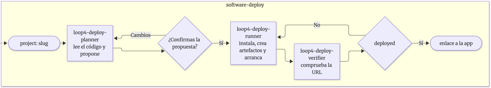
El planner lee el código y escribe deploy/proposal.md: stack, qué instalará, comandos, puerto y URL. Tú confirmas.
El runner instala, crea start.sh y stop.sh en deploy/ y arranca la app en segundo plano. No modifica el código de la app.
El verifier comprueba que el proceso vive y que la URL responde. Si falla, el runner reintenta con el informe (hasta 3 intentos).
Al terminar recibes el enlace, por ejemplo http://127.0.0.1:3000/.
Demo · de la idea a la app
Una idea en una frase se convierte en una aplicación desplegada
Ejemplo: una aplicación web monousuario tipo Kahoot, sin autenticación ni base de datos, con 20 preguntas sobre Kiro y colores que cambian al acabarse el tiempo.
Demo 3 (4 min 18 s) · Loop 4. Los workflows software-spec, software-build y software-deploy desde Kiro IDE, con la app resultante en 127.0.0.1:5173.
Conclusiones
Ya sabemos hacer loops con Kiro
Ya no basta optimizar respuestas
Hay que diseñar sistemas completos: modelos que ejecutan tareas, guardan información, se coordinan y verifican resultados.
Empieza simple
Un script con --no-interactive y una comprobación determinista ya es un loop (Loop 1 y 2).
Pasa a Workflows cuando necesites más
Paralelismo, pausas con humanos, contexto fresco por paso y paradas declarativas (Loop 4; Loop 3 en el repositorio).
Verifica con evidencias
Criterio de éxito comprobable, revisor independiente, tope de iteraciones y personas en las decisiones.
Para seguir aprendiendo
Todo el código de la charla está en el repositorio: loop-and-graph-engineering-with-kiro
Carpeta
Qué contiene
Loop1/
Hello World: script con --no-interactive y verificación.
Loop2/
Refinamiento de artículos con tres agentes y un while.
Loop3/
El mismo loop como Kiro Workflow (refine-article). Solo en el repo, no se presenta en la charla.
Loop4/
Desarrollo de software con software-spec, -build y -deploy.